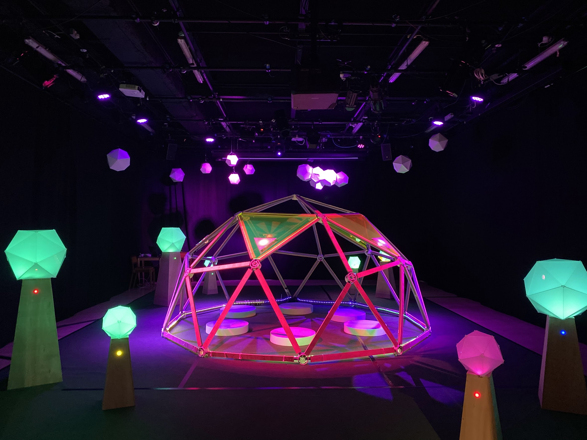
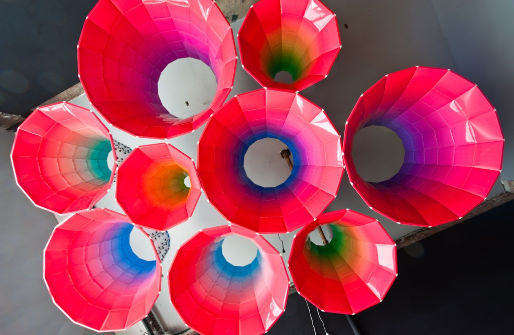
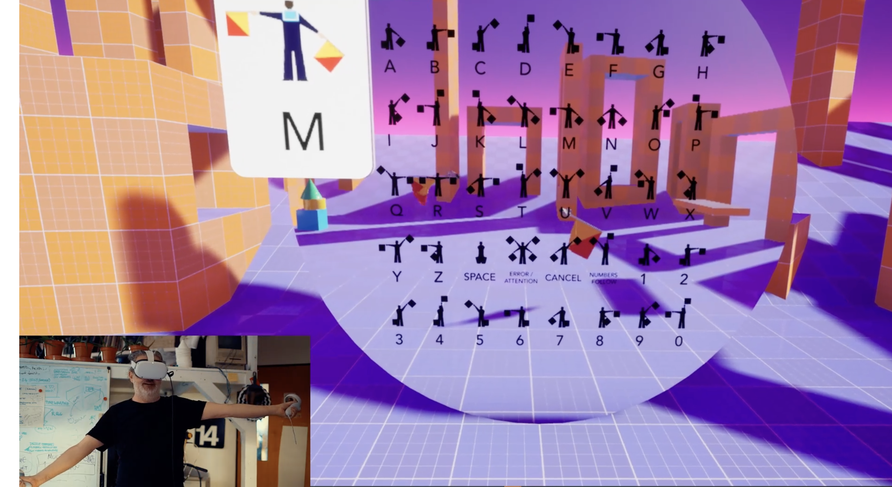

Phoenix Perry
Reader, UAL Creative Computing Institute
FDCCC · AHRC BRAIDResearch Lead£228,153
4i · EPSRCCo-Investigator£497,829
Music RAI · RAI UK / UKRICo-Investigator£122,420
InteractML · Epic MegaGrantPrincipal Investigator£21,000
IML for game developers · GooglePrincipal Investigator$20,000
Anti-Gravity Machine · AHRC × SSHRCUK Leadbid submitted
Combined full economic cost£850,000+
What I hold to be true
- There is no data without positionality. Data carries the values, ontologies and ways of knowing of its makers.
- Access is a creative practice, not a compliance checklist.
- Communities should govern the data and tools that represent them. Refusal is a governance act, not a failure.
- Play is how bodies think. Embodiment is a research method.
- Small, slow, low-carbon computation is a design position, not a constraint.
Where I speak from
- Disabled arts practitioner, making games, installations and instruments since 1998; my body is in the work.
- Artist–activist who uses culture as a medium: building institutions is writing social fiction. What world do we want? How do we get there?
- 14 years as an art & creative director in industry before 13 years teaching across four universities.
- Positionality as method: crip and intersectional feminist critique shapes what I build, who I build with, and what I refuse.

Building the rooms I wasn't given
- Devotion Gallery, Brooklyn (2009–2014): a home for art + technology practice.
- Code Liberation Foundation (2012–2022): free creative-technology education for women and non-binary people; 6,000+ learners.
- Co-founded the Creative Computing Institute at UAL; contributed to three degree programmes, authored the MSc and BSc in Creative Computing.
- Processing Foundation advisory board · ACM Games editorial board · former British Games Institute trustee.
- Music RAI (EPSRC): countering Western bias in AI music generation.


Cripping the Controller
- Custom input systems and interfaces designed from disabled practice: the controller as a site of politics.
- A “criptastic” design framework: the values and methods of disabled designers, centred.
- Bot Party: accessibility through playful, embodied touch. GDC Award nominee · IndieCade selection.
- Redefines accessibility as a creative process, not a checklist.

Programming by moving
Node-based interactive machine learning inside game engines, where dancers, artists and movement practitioners teach models by demonstration, not code.
60,000+active users
Epic · GoogleMegaGrant & Google funded
VRST · TEI · NordiCHI · MOCO publications

Resident Thrum
- A three-minute ritual of cardiac synchronisation: two to six players on a hexagonal grid of haptic tiles, hearts nudging one another toward synchrony.
- Haptic, sonic and light feedback generated live from participants' heartbeats; as the group converges, the soundscape warms.
- An active research site: group interoception, prosocial behaviour, and the permeable boundary of the self.

64bpm
FDCCC AHRC · BRAID · funded to 2027
- Inverts federated learning: data-centric, not model-centric. Data doesn't exist to improve someone's central model.
- Each community crafts its own governance from lived experience, decides what counts as data, and retains custody.
- Refusal and withdrawal are governance acts. Training only on open, inspectable weights.
- Bias, under community control, becomes a resource rather than a defect.
Escaping the gravity wells
of generative AI
- Generative models pull every request toward dominant cultural attractors: homogenisation by design.
- AGM makes latent space visible, navigable and deliberately slow: fork trajectories, map journeys, hold ambiguity, diagnose the pull.
- UK–Canada AHRC/SSHRC sandpit · PI (UK), with Stephen DiPaola (SFU) · partners incl. ComfyUI & Factory International.
- ~95% lower energy: exploration on consumer GPUs.
“Agency begins not at the model's interface but at the constitution of data itself.”
Tools, commons and frameworks that return agency to the communities technology claims to serve.
phoenix@phoenixperry.com · phoenixperry.com